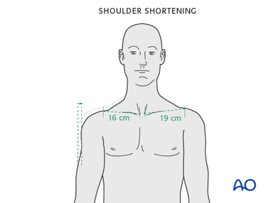

Авторы
Увидели ошибки в статье?
Назад
Клиническое и рентгенологическое обследование

1. Общие соображения
Любые признаки и симптомы, связанные с областью плеча, требуют дополнительного целенаправленного обследования для оценки пульса в дистальном отделе, моторики и ощущений, а также активных и пассивных движений плеча, где это возможно. Следует рассмотреть любые возможные сопутствующие травмы всего плечевого пояса и верхней конечности с последующим тщательным клиническим обследованием ключицы и плеча.
Переломы медиального конца ключицы
Распознавание переломов со значительным смещением, особенно в заднем или загрудинном направлении, требует срочного обследования и лечения из-за потенциальных повреждений нижележащих сосудисто-нервных структур и дыхательных путей. Переломы медиального конца часто пропускаются. Эти переломы редки и могут проявляться как стрессовые переломы в результате повторяющегося напряжения / активности в патологической или остеопоротической кости, или в результате высокоэнергетической тупой / проникающей травмы с мультисистемными повреждениями. У этих пациентов может быть повышенная смертность из-за тяжести других опасных для жизни травм.
2. Клиническое обследование
Клиническая оценка начинается с осмотра ключицы и плеча. Кожа проверяется на наличие растяжений или открытых ран.
Укорочение ключицы можно определить по сравнению с противоположной неповрежденной стороной, сравнив расстояние между двумя фиксированными костными ориентирами, такими как медиальный конец ключицы (который легко прощупывается) и акромиально-ключичный сустав.
Клиническая оценка начинается с осмотра ключицы и плеча. Кожа проверяется на наличие растяжений или открытых ран.
Укорочение ключицы можно определить по сравнению с противоположной неповрежденной стороной, сравнив расстояние между двумя фиксированными костными ориентирами, такими как медиальный конец ключицы (который легко прощупывается) и акромиально-ключичный сустав.
3. Рентгенографическая оценка
После установления и стабилизации клинического состояния пациента обязательным является рентгенологическое исследование поврежденного плеча. Рентгенограмма ключицы может недооценивать степень повреждения или смещения.
Для получения рентгенологического доступа ко всей ключице требуются особые виды в зависимости от локализации повреждения.